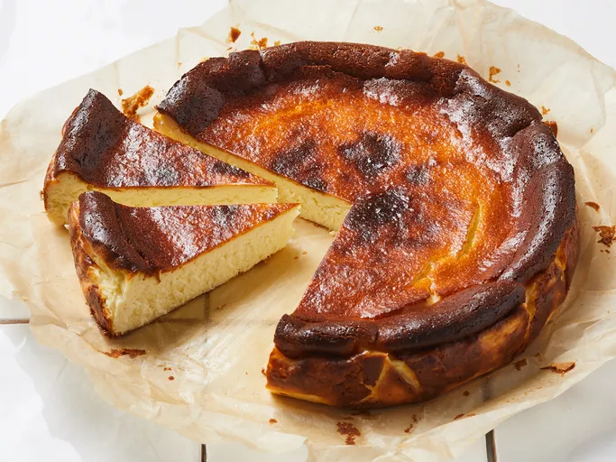

Basque Cheesecake

Description
This cheesecake is the alter ego to the classic New York-style cheesecake with a press-in cookie crust. This one is crustless, and we bake it in a cake pan. It gets its structure from whipped eggs and a very hot oven, which makes the outside of the cake look very dark. Fear not: It's not burnt, just very, very deeply caramelized.
Ingredients
- 1 1/2 pounds (3 8-ounce packages) cream cheese, very soft
- 1 1/3 cups granulated sugar
- 1/4 teaspoon kosher salt
- 1/3 cup heavy cream
- 1 teaspoon vanilla extract
- 3 large eggs, room temperature
- 1 1/2 cups all-purpose flour
Steps
- Gather all ingredients.
- Preheat oven to 400°F. Line a 9-inch springform pan with 2 3/4-inch-high sides with 2 layers of parchment paper, cut to fit. Using an electric mixer on medium-high speed, beat cream cheese in a large bowl, scraping down as needed, until very smooth.
- Gradually add sugar and salt and beat, scraping down sides of bowl, until mixture is light and fluffy.
- With mixer on low speed, gradually add cream, then vanilla. Beat in eggs one at a time, scraping down sides of bowl between additions.
- Gradually add flour and beat until smooth.
- Pour batter into prepared pan and smooth top. Set on a rimmed baking sheet and bake cheesecake, rotating halfway through, until deeply golden brown on the top and sides, 60–65 minutes.
- Let cool slightly, then unmold and let cool completely on a wire rack. Serve